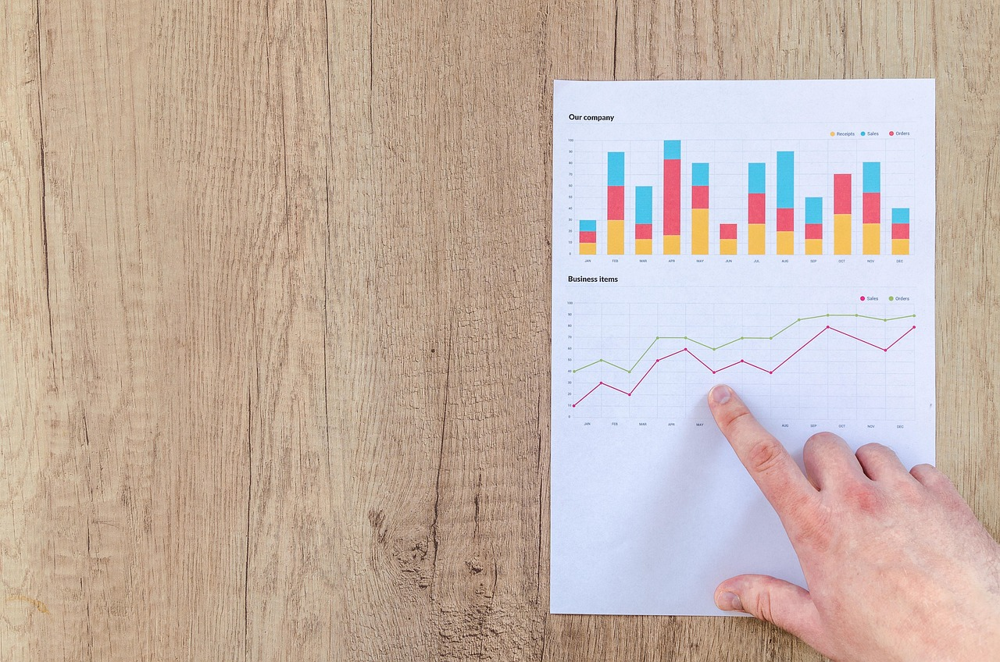

TL;DR
Index funds and ETFs each offer unique advantages for new investors. Choose index funds for a buy-and-hold strategy with lower fees, or opt for ETFs for real-time trading flexibility. Diversifying your investments can maximize long-term growth.
The Common Misconception: Index Funds vs ETFs
Understanding the basics is crucial for new investors. Index funds are mutual funds designed to track a specific index, like the S&P 500, allowing you to invest in a wide range of companies with a single purchase.
Conversely, Exchange-Traded Funds (ETFs) also track an index but trade like stocks on an exchange. This structural difference means you can buy and sell ETFs throughout the day at fluctuating prices, unlike index funds, which are priced at the end of the trading day.
Why Overlooking Cost Structures Can Hurt Your Returns

One often-overlooked aspect of investing is the cost structure. For instance, while the average expense ratio for index funds can hover around 0.1% to 0.5%, ETFs typically range from 0.03% to 0.5%.
Let's say you invest $10,000 in an index fund with a 0.4% expense ratio compared to an ETF at 0.1%. Over ten years, with a 7% annual return, this seemingly small difference can erode up to $600 in returns.
Hidden costs, like transaction fees and taxes, can add up quickly, and failing to account for these expenses can significantly diminish your long-term gains.
Investment Flexibility: Which Fits Your Style?

When investing, flexibility can make a big difference, depending on your strategy. If you're looking for a buy-and-hold approach, index funds are often the way to go.
They allow for automatic rebalancing, which can encourage discipline among investors. On the flip side, if you're inclined towards more active trading strategies, ETFs provide that flexibility, enabling you to buy and sell throughout the day.
This real-time trading can be advantageous for those looking to capitalize on price fluctuations, making ETFs a favored choice for day traders.
However, frequent trading can incur higher transaction fees, which might eat into profits
A Real Scenario for Beginner Investors

### A Real Scenario for Beginner Investors
Imagine a beginner investor named Alex, who has decided to embark on their investment journey with just $100 a month. Instead of waiting to save up a large amount like $1,000 or more, Alex adopts a disciplined recurring investment strategy.
In their first month, Alex allocates $60 to a broad market ETF, like the SPDR S&P 500 ETF Trust (SPY), which tracks the performance of the S&P 500 index.
This choice provides exposure to 500 of the largest U.S. companies, offering diversification right off the bat. Next, Alex puts $20 into a dividend ETF, such as the Vanguard Dividend Appreciation ETF (VIG), which focuses on companies that have a history of increasing dividends.
This not only helps build capital but also generates a small income stream over time.
The remaining $20 is set aside in cash or invested in a low-risk bond fund, which serves as a safety net during market volatility. For instance, during a market downturn, the bond fund can help stabilize Alex's overall portfolio.
Initially, after three months, Alex’s account may only show $300, comprised of the ongoing contributions and modest ETF performance. However, the true value lies in Alex's growing investment habit.
By adhering to their monthly investment plan, they become less tempted to time the market or react emotionally to fluctuations.
Let’s fast forward a year. Alex has consistently contributed $1,200 ($100 per month), and thanks to the power of compound growth and reinvested dividends, their portfolio could be worth around $1,250—an approximate 4.2% return, a reasonable expectation in a mixed-market environment.
Over time, this consistent approach fosters confidence and financial literacy. By avoiding the pitfalls of chasing quick gains, Alex learns how market dynamics affect both index funds and ETFs, empowering them to make informed investment decisions down the line.
For example, as they gain experience, they might start reallocating funds or exploring sector-specific ETFs or actively managed funds as their financial goals evolve.
Mistakes That Can Erode Your Investment Gains
### Mistakes That Can Erode Your Investment Gains
New investors often fall into common traps that can significantly hinder their potential for wealth growth. One major blunder is trying to time the market.
Many new investors think they can buy stocks or funds at a low price and sell them at a high price based on gut feelings or the latest news.
For example, if an investor decides to sell an ETF after a market drop only to miss the subsequent surge that follows—where S&P 500 historically sees gains of over 20% in the months following a market dip—this can drastically erode their returns.
Studies indicate that missing just ten of the best-performing days in the market can reduce annualized returns by nearly half over a 20-year period.
Neglecting to diversify your portfolio is another common pitfall. If a new investor puts 100% of their capital in one index fund that tracks the tech sector and that sector experiences a downturn, the investor could see significant losses.
Consider a scenario where an investor allocates $10,000 to a tech-focused index fund in December 2021. By June 2022, as inflation and supply chain issues impacted tech stocks, the value could have plummeted to $7,000. Conversely, an investor who spreads that same $10,000 across various sectors—such as healthcare, utilities, and consumer goods—might only experience a loss of about $2,000, thereby safeguarding their overall portfolio from the volatility of any single sector.
Furthermore, many new investors often overlook the importance of regularly rebalancing their portfolios. For example, if your portfolio starts with a desired allocation of 60% in equity funds (including both index funds and ETFs) and 40% in bonds, market movements can distort this balance over time.
If stocks rise significantly, you might find yourself over-exposed to stocks—let’s say they climb to 80% of your portfolio—creating higher risk during market corrections.
Failing to rebalance could expose you to significant losses down the line.
Next Steps: Where to Go from Here?
Moving forward, consider creating a balanced portfolio tailored to your goals. Assess your risk tolerance and growth expectations to decide how much to allocate towards index funds versus ETFs.
Regularly monitor your investments, say every six months, to ensure they align with your objectives. You might find combining both types allows a solid foundation for growth while maintaining the flexibility to adapt.
This method not only simplifies your monitoring process but allows for diversification, as well
FAQ
What are the main differences between index funds and ETFs?
Index funds are mutual funds that track a specific index and are priced at the end of the trading day. ETFs also track indexes but trade like stocks throughout the day, allowing for real-time pricing.
How do fees affect long-term investment growth?
Fees, such as expense ratios and transaction fees, can significantly reduce your investment’s growth over time. Even a small difference in fees can lead to substantial losses in returns over decades.
This article has been reviewed for practical usefulness and is updated with relevant investment information.
Next step
Use the article as a decision point, not just reading material. Your next system matters more than more browsing.
Search more articles
Find related tools, workflows, and guides.
Photo credits
- Photo 1: AlphaTradeZone via Pexels
- Photo 2: Goumbik via Pixabay
- Photo 3: AS_Photography via Pixabay
- Photo 4: MiraCosic via Pixabay
- Photo 5: poupoune05 via Pixabay